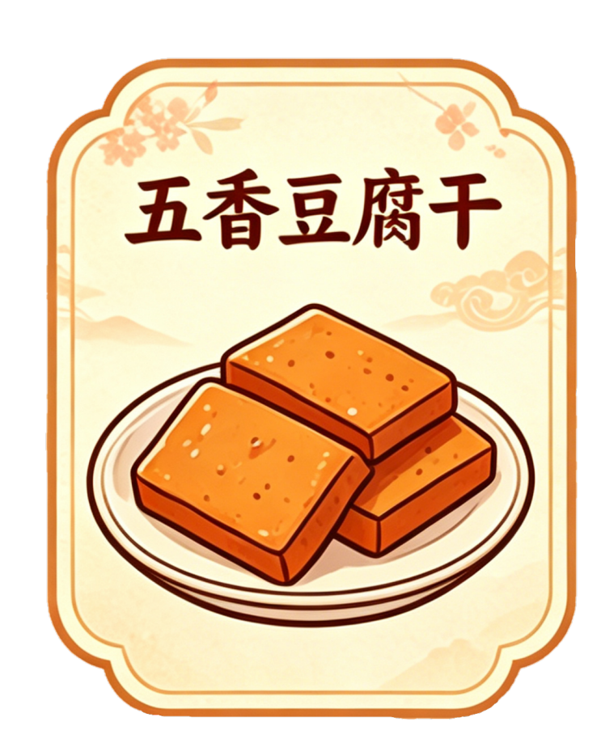
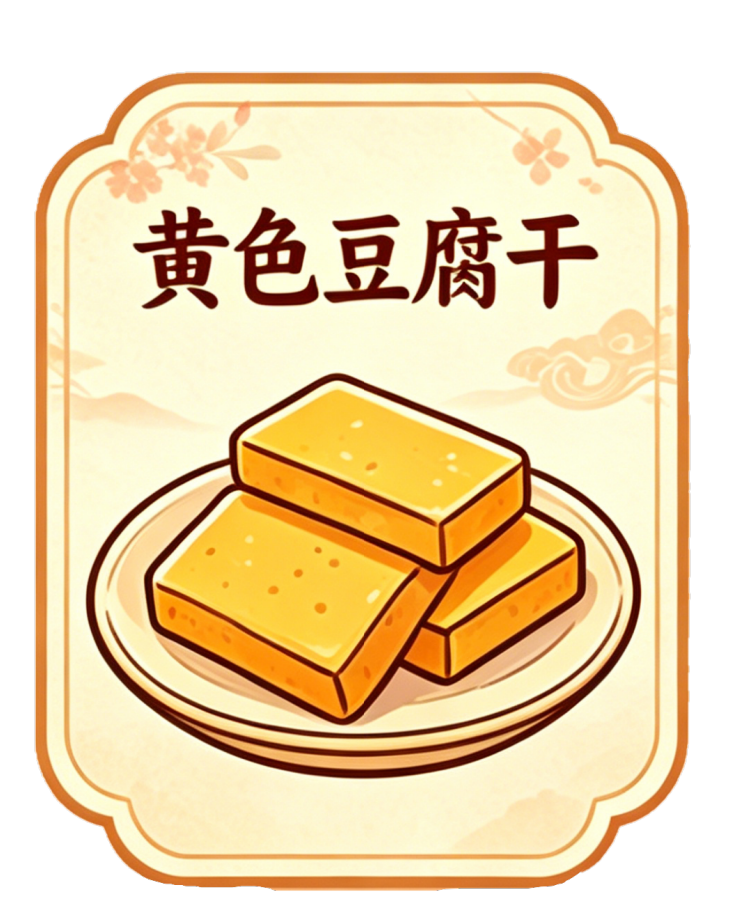
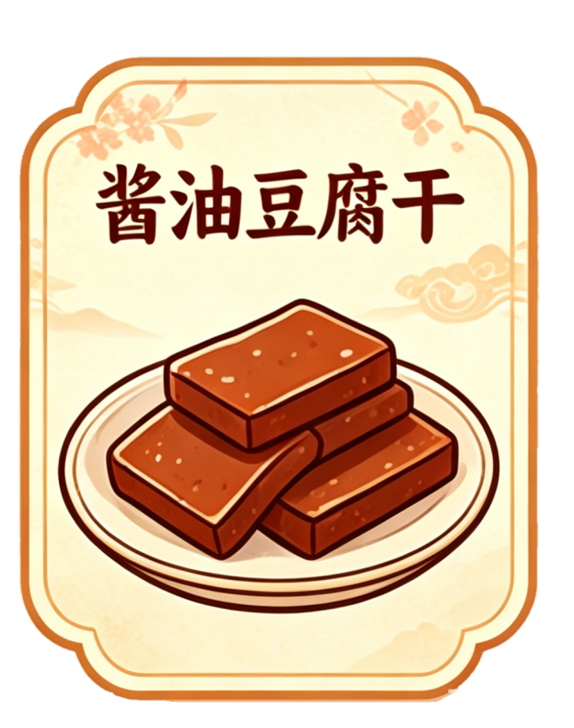
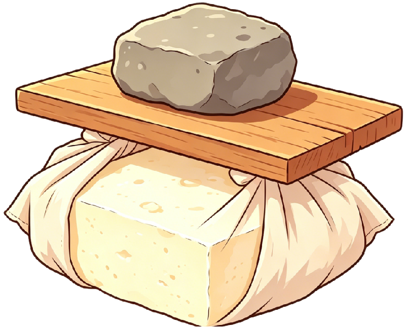
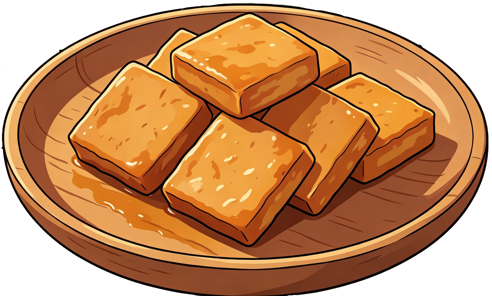

五香豆腐干
以八角、桂皮、小茴香等香料研磨五香粉腌制，磨光晾干后抹栀子水染黄，微火烘焙，印红色标签即成。咸香浓郁，外韧内嫩。

黄色豆腐干
栀子水染色成就标志性金黄色。磨光涂抹后晾干，微火慢烘焙至香韧可口，固定金黄光泽。色如琥珀，口感偏软嫩，带有淡淡草木清香。

酱油豆腐干
酱油配八角、桂皮、甘草等文火慢煮浸制，晾半干后微火反复烘烤。油亮琥珀色，酱香醇厚，咸中带甜，汁香四溢，是下酒佐茶的佳品。

浸泡
→
煮浆
→
酸浆点卤
→

滤压
→
成型


长汀豆腐干始于唐朝开元年间，距今1200多年。客家先民将中原豆腐技艺带到长汀，创制出豆腐干雏形，早期以手工制作、注重口感。明朝洪武年间，据《汀州府志》记载，守将朱亮祖常食并大加赞赏，使其声誉大增，工艺逐步规范化。清代进一步发展，成为民间日常食品及宫廷贡品。清末，汀州把总邱洪得调任台湾时，特请家乡制干能手赴台制作，扩大了影响力。近现代以来，在保持传统基础上创新发展出五香、酱油等多种口味。2021年，其制作技艺入选福建省省级非物质文化遗产。